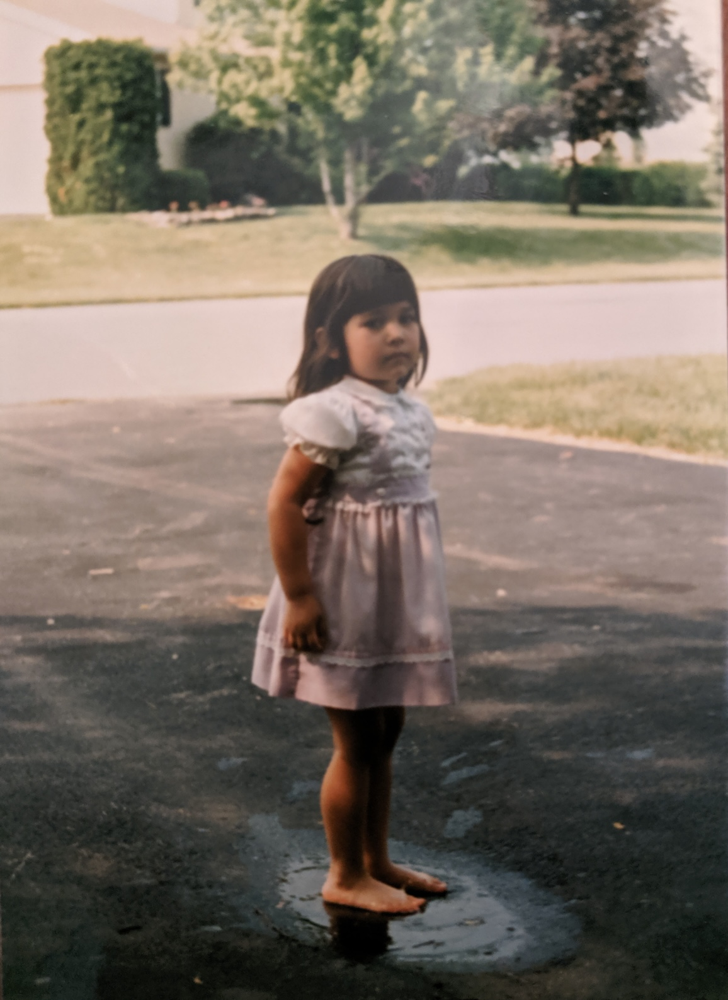

About
Alison (she/they) has been writing since she could hold a crayon. They won their first poetry prize
in first
grade, and gave their first reading on the elementary school morning announcements. This initial
televised performance paved the way for numerous future digital open mics in the Covid Era.
While initially earning their BA in Philosophy and Italian Literature at the University of Delaware,
Alison continued her education at the University of Pennsylvania, earning an MSEd in Secondary
English with a concentration in Urban Education. They have also completed (or will very soon) Penn's
Coding Bootcamp.
Though they currently live on the East Coast, they claim Californian terroir by birth and hope one
day to return Westward.
Short Bio
Alison Lubar teaches high school English by day and yoga by night. They are a queer femme of color
whose life work (aside from wordsmithing) has evolved into bringing mindfulness practices, and
sometimes even poetry, to young people. Most recently, their work has been published by or appeared
in Rowan University’s Glassworks, Giovanni’s Room anthology queerbook, Fearsome Critters'
Quaranzine, Apiary Magazine, and antonym.